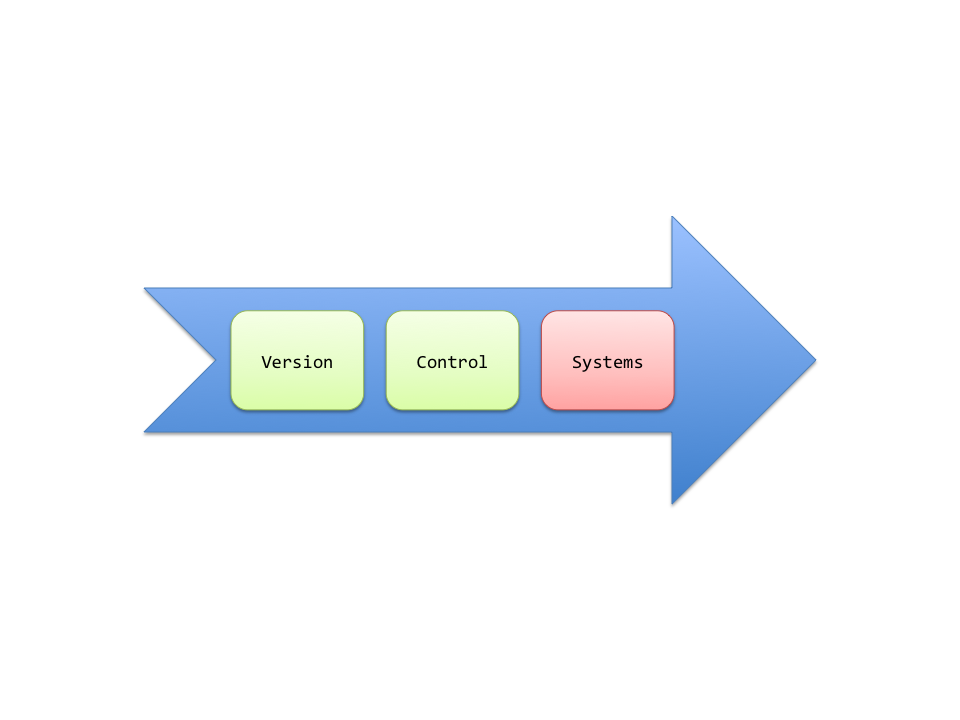
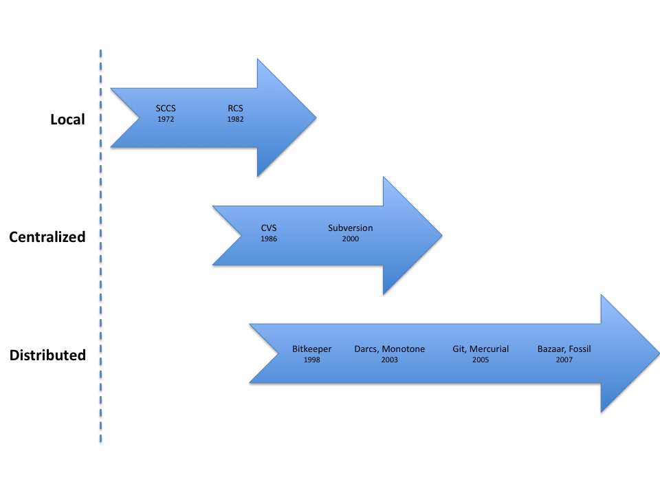
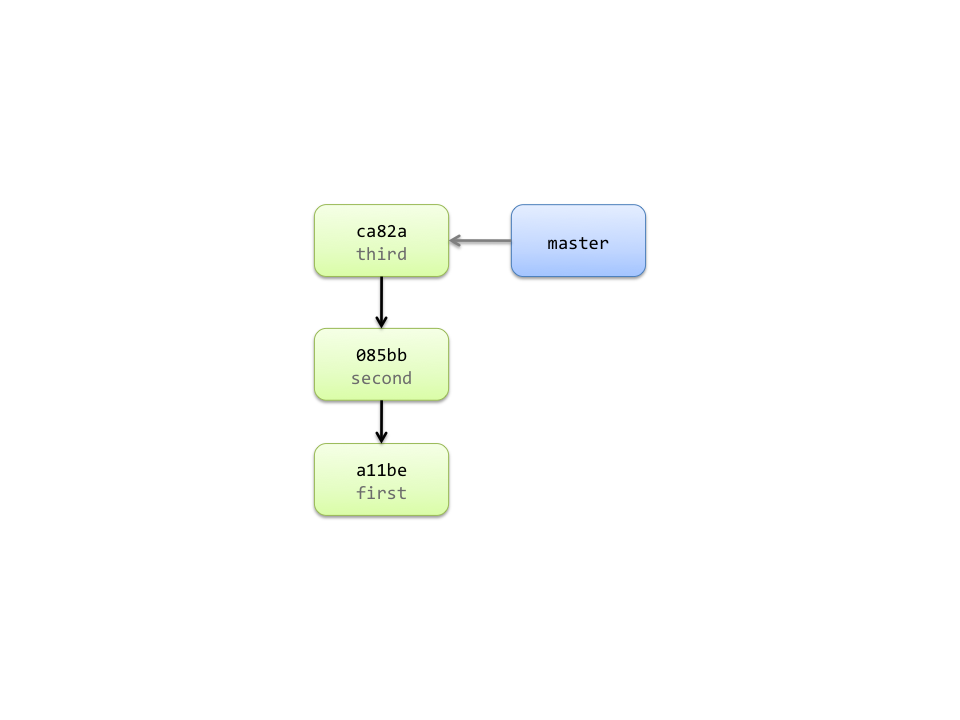
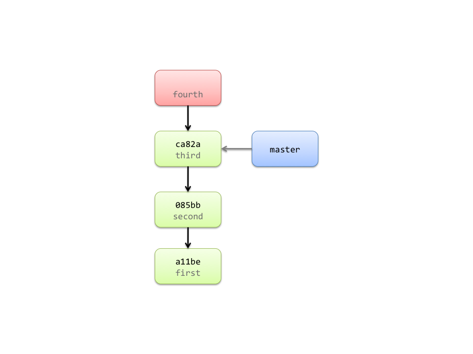
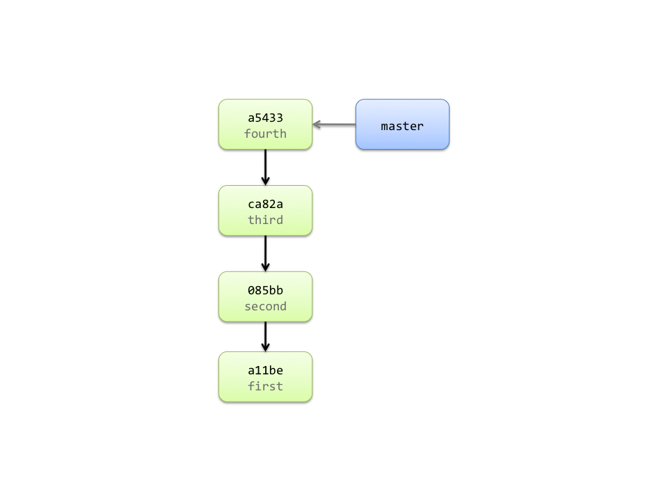
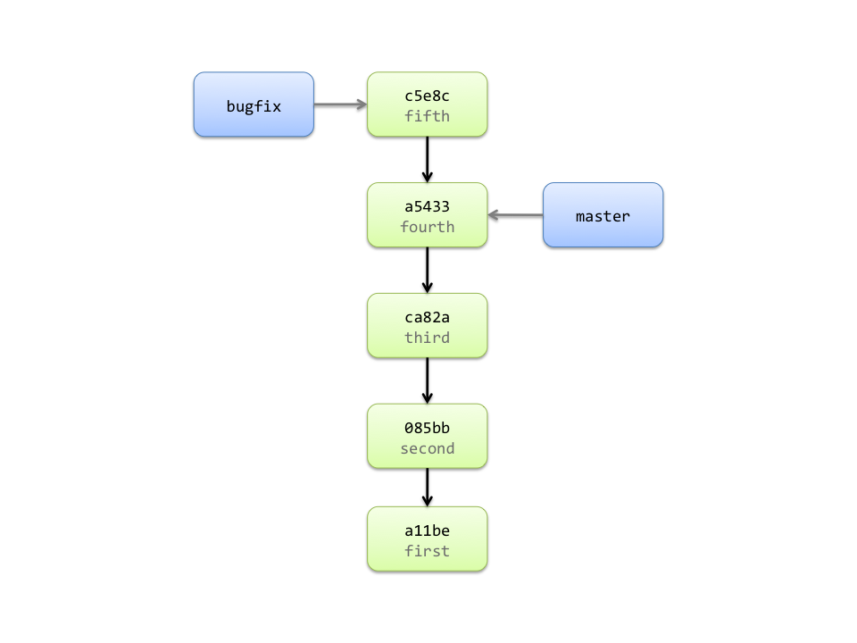
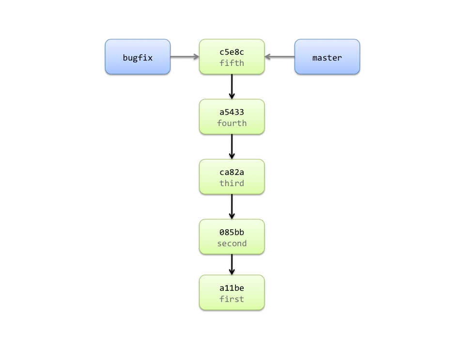
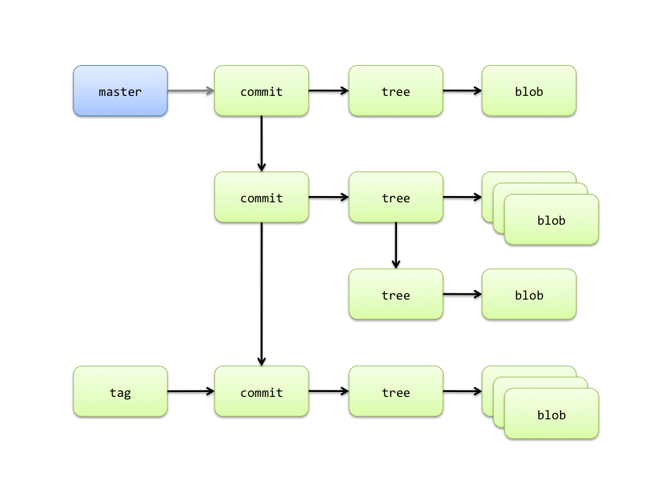

| space, → | next slide |
| ← | previous slide |
| d | debug mode |
| ## <ret> | go to slide # |
| c | table of contents (vi) |
| f | toggle footer |
| r | reload slides |
| z | toggle help (this) |

$ ls -1F
AwesomeApp/
AwesomeApp-20110423163315/
AwesomeApp-20110430220830/
AwesomeApp-20110509223856/
AwesomeApp-bugfix/
AwesomeApp-v2/
AwesomeApp-v2.1/
AwesomeApp-v3/
AwesomeApp-v3.1/
AwesomeApp-v3.1.1/

$ svn checkout URL local-dir
A local-dir/README
A local-dir/Rakefile
A local-dir/lib
A local-dir/lib/simplegit.rb
Checked out revision 3.
$ git clone URL local-dir
Cloning into local-dir...
remote: Counting objects: 13, done.
remote: Compressing objects: 100% (8/8), done.
remote: Total 13 (delta 3), reused 13 (delta 3)
Receiving objects: 100% (13/13), done.
Resolving deltas: 100% (3/3), done.

$ svn log
------------------------------------------------------------------------
r3 | joseph | 2008-03-17 21:52:11 -0400 (Mon, 17 Mar 2008) | 1 line
third
------------------------------------------------------------------------
r2 | joseph | 2008-03-15 16:40:33 -0400 (Sat, 15 Mar 2008) | 1 line
second
------------------------------------------------------------------------
r1 | joseph | 2008-03-15 10:31:28 -0400 (Sat, 15 Mar 2008) | 1 line
first
------------------------------------------------------------------------
$ git log
commit ca82a6dff817ec66f44342007202690a93763949
Author: Joseph Crail <xyz@gmail.com>
Date: Mon Mar 17 21:52:11 2008 -0400
third
commit 085bb3bcb608e1e8451d4b2432f8ecbe6306e7e7
Author: Joseph Crail <xyz@gmail.com>
Date: Sat Mar 15 16:40:33 2008 -0400
second
commit a11bef06a3f659402fe7563abf99ad00de2209e6
Author: Joseph Crail <xyz@gmail.com>
Date: Sat Mar 15 10:31:28 2008 -0400
first
$ svn add TODO
A TODO
$ git add TODO

$ svn status
A TEST
$ git status
# On branch master
# Your branch is ahead of 'origin/master' by 1 commit.
#
# Changes to be committed:
# (use "git reset HEAD <file>..." to unstage)
#
# new file: TODO
#
$ svn commit -m "fourth"
Adding TODO
Transmitting file data .
Committed revision 4.
$ git commit -m "fourth"
[master a543355] fourth
1 files changed, 1 insertions(+), 0 deletions(-)
create mode 100644 TODO

$ svn copy URL/trunk URL/branches/bugfix
Committed revision 5.
$ svn switch URL/branches/bugfix .
$ <add a new file and commit>
$ git checkout -b bugfix
Switched to a new branch 'bugfix'
$ <add a new file and commit>
[bugfix c5e8c24] fifth
1 files changed, 1 insertions(+), 0 deletions(-)
create mode 100644 TEST

$ svn merge -r 4:HEAD URL/branches/bugfix
$ <commit merged changes into trunk>
$ git checkout master
Switched to branch 'master'
Your branch is ahead of 'origin/master' by 1 commit.
$ git merge bugfix
Updating a543355..c5e8c24
Fast-forward
TEST | 1 +
1 files changed, 1 insertions(+), 0 deletions(-)
create mode 100644 TEST

$ svn help
Available subcommands:
add
blame (praise, annotate, ann)
cat
changelist (cl)
checkout (co)
cleanup
commit (ci)
copy (cp)
delete (del, remove, rm)
diff (di)
export
help (?, h)
import
info
list (ls)
lock
log
merge
mergeinfo
mkdir
move (mv, rename, ren)
propdel (pdel, pd)
propedit (pedit, pe)
propget (pget, pg)
proplist (plist, pl)
propset (pset, ps)
resolve
resolved
revert
status (stat, st)
switch (sw)
unlock
update (up)
$ git help
The most commonly used git commands are:
add Add file contents to the index
bisect Find by binary search the change that introduced a bug
branch List, create, or delete branches
checkout Checkout a branch or paths to the working tree
clone Clone a repository into a new directory
commit Record changes to the repository
diff Show changes between commits, commit and working tree, etc
fetch Download objects and refs from another repository
grep Print lines matching a pattern
init Create an empty git repository or reinitialize an existing one
log Show commit logs
merge Join two or more development histories together
mv Move or rename a file, a directory, or a symlink
pull Fetch from and merge with another repository or a local branch
push Update remote refs along with associated objects
rebase Forward-port local commits to the updated upstream head
reset Reset current HEAD to the specified state
rm Remove files from the working tree and from the index
show Show various types of objects
status Show the working tree status
tag Create, list, delete or verify a tag object signed with GPG
$ git add -p
# interactively add hunks of content to staging area
$ git commit --amend
# amend the message of most recent commit
$ git log --oneline --graph
# show history with shortened commit messages
$ git grep <regexp>
# search working directory for regexp
$ git grep <regexp> $(git rev-list --all)
# search all commits on current branch for regexp

$ git ls-tree 999902bd8ee2b07e19c96f11bddf475527fff3d4
100644 blob 159202af1c0374e33374f2a0e20b5e0ecbc0c19e .gitignore
100644 blob 37e1207dab85993425ee5f4ceb2a59055dccfc77 .gitmodules
100644 blob e04728e8d391f57a6fa0c3325118750c602ef5ef Capfile
100644 blob 2af0fb1133d03dcedf1f2bbca9a9b04444ef84f0 README
100644 blob 3bb0e8592a41ae3185ee32266c860714980dbed7 Rakefile
100644 blob 70d0345e4619e790993e852fe0ed1946d8d53afc TODO.txt
040000 tree 875c4668c815306dcb1de23407973e2f1fb9d3a8 app
040000 tree 942fb533688aa713f5302b525cf0b8cfeb245d8b config
040000 tree da543b1ab388687f5612e6fb7c06fc778b8026bc db
040000 tree 0269300738b048a5cc34769d1436d9f228499018 doc
040000 tree 5a86b1e544e01c8951edafc39a3b0ca7bf09c2e9 lib
040000 tree 0289883d028de7e3c8c54a7fa09c2851fda8346f public
040000 tree 5ecf890b2a8c6d1e6b76b7d2ac25a4e40cf2cc67 script
040000 tree c900b82e1d3f53af6392341f4ecf2a271961c26a spec
040000 tree 3d5fc32106bf1848bcb79ef8a9f0fbf06e858fed vendor
$ git cat-file -p e04728e8d391f57a6fa0c3325118750c602ef5ef
load ‘deploy’ if respond_to?(:namespace)
Dir['vendor/plugins/*/recipes/*.rb'].each {
|plugin| load(plugin)
}
load ‘config/deploy’
$ git cat-file -p 875c4668c815306dcb1de23407973e2f1fb9d3a8
040000 tree 3e6fae3a140890d75eb9d51ce0974f7969194661 controllers
040000 tree 77b99dd8afcf55ad613d51e9e18a3df1aafa3f62 helpers
040000 tree 41c9c92d8f11afe27f2f25fa6bad867d6427cfbe models
040000 tree c958c76cd2ccda49b3d514a1a12b2236974300c2 sweepers
040000 tree 850a76c0d5d056c43d56bc5d987836ea296584f4 views
040000 tree 4c713208aee9f3bfb172424e3a68f2a1f10d715a workers
$ git cat-file -p master:
tree dcad9007245d68ff56d90fcf96af38f686eb61c1
parent 4d9cb9b0d6248bb5c0868261039ef7f56ce47494
author Jan Varwig <jan@varwig.org> 1300882710 +0100
committer Jan Varwig <jan@varwig.org> 1300882710 +0100
Wrote Helper methods in User to aid with taking down accounts
$ git cat-file -p test_tag
object 4a06c46ee6d58ce4be09954ee054921b18269cd6
type commit
tag test_tag
tagger Jan Varwig <jan@varwig.org> Fri Apr 15 19:42:02 2011
This is the message for the test tag